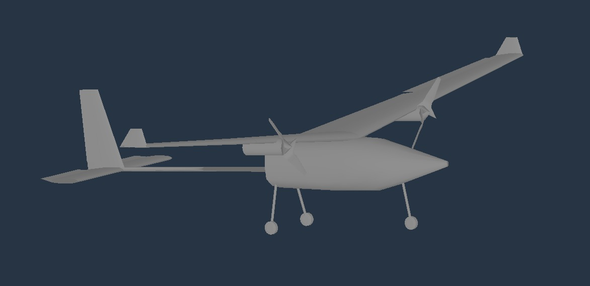
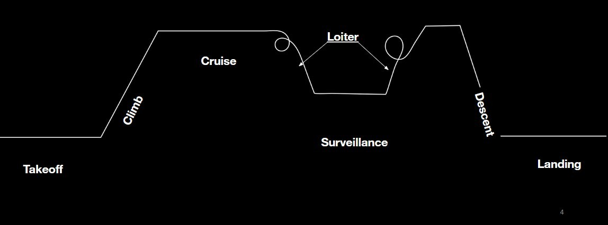

Hawkeye: Wildlife Surveillance UAV
LOW ALTITUDE, LONG ENDURANCE

Mission Profile

Overview
Hawkeye (Hawk-eye) is a low-altitude, long-endurance (LALE) UAV that we designed for wildlife surveillance. The idea behind it is simple: stay in the air for a full day and night over a protected area, and carry a camera that can see animals in daylight and in the dark. It is a high-wing, twin-engine aircraft with a single boom tail. Takeoff weight is about 700 kg, including 300 kg of fuel, and it cruises at about 35 m/s with an operational altitude of around 2,000 m above sea level, a service ceiling of about 5,000 m and an endurance of more than 24 hours.
The work covered the whole conceptual design: mission requirements, configuration, weight estimation, payload and engine selection, airfoil and planform design, aerodynamic analysis in XFLR5, and flight simulation in X-Plane 12 to check how the aircraft behaves after a disturbance.
Introduction
Hawkeye is built for low-altitude surveillance missions. It can stay in the air for long hours while keeping its stability and efficiency, and it carries modern sensors for effective surveillance and information gathering.
Why We Designed It
Protecting wildlife depends on regular animal counts and on patrols against poaching. Surveys from manned aircraft cost a lot and put the crew at risk, and small drones are cheap but usually run out of battery within an hour or two. Reviews of wildlife drones point to short endurance as one of the main limits. Hawkeye is our answer to that gap: a larger, fuel-powered aircraft that can cover a lot of ground in one flight and keep watching the same area for hours.
Mission Requirements
The mission asks for three things: long endurance, long range and surveillance. The profile in the figure above has seven phases: takeoff, climb, cruise out to the survey area, loiter, surveillance, descent and landing. Most of the flight time is spent in the loiter and surveillance phases, which is why endurance drives the whole design.
Aircraft Configuration
- High wing, for lateral stability
- Dihedral wing, also for lateral stability
- Tapered wing
- Twin engine with a single boom
- Conventional tail configuration
- Cylindrical fuselage
- Tricycle landing gear
General Specifications
| Parameter | Value |
|---|---|
| Takeoff weight | 700 kg |
| Payload allowance | 175 kg |
| Power | 2 × 65 hp |
| Cruise speed | about 35 m/s |
| Operational altitude | about 2,000 m ASL |
| Service ceiling | about 5,000 m ASL |
| Endurance | 24 hours or more |
Payload Selection
For the sensor we compared four electro-optical and infrared turrets: the L3Harris WESCAM MX-20, the FLIR Star SAFIRE 380-HD, the Thales I-Master SAR and the Raytheon AN/DAS-4 MTS-B. We looked at EO resolution, IR performance, zoom, stabilization, laser rangefinder, weight and how each one is used, and chose the MX-20 as the payload for this concept.
The MX-20 is a stabilized multi-sensor turret with thermal, daylight, low-light and SWIR imaging, an eye-safe laser rangefinder and internal stabilization, and it weighs under 91 kg with all of its sensors. That makes it a good match for wildlife work: the thermal camera can pick up heat signatures through foliage, smoke or darkness, which matters for night patrols and for dense habitat, and the zoom optics let the aircraft identify animals from a distance without disturbing them.
The camera needs more than its own weight, so we also listed the supporting equipment. Together the camera system (100 kg), batteries (4 × 10 kg), mounting frame (10 kg), backup power (10 kg), cooling, wiring, power distribution, flight controller, telemetry, video downlink, GPS, IMU, storage, antennas and test tools add up to about 175 kg.
Propulsion
We picked two Rotax 582 UL engines. This is a two-stroke engine commonly used in light aircraft and UAVs, with a high power-to-weight ratio. Each engine weighs about 35 kg including accessories, so the pair weighs about 70 kg. Once the propellers, exhaust, cooling, mounting hardware, fuel system, electrical system and accessories are counted, the propulsion package comes to 103 kg.
| Component | Per engine | Two engines |
|---|---|---|
| Engine with accessories | 35 kg | 70 kg |
| Propeller | 6 kg | 12 kg |
| Exhaust system | 2 kg | 4 kg |
| Cooling system | 2 kg | 4 kg |
| Mounting hardware | 3 kg | 6 kg |
| Fuel system components | - | 2 kg |
| Electrical system | - | 3 kg |
| Miscellaneous accessories | - | 2 kg |
| Total | - | 103 kg |
Weight Estimation
The weight estimate for the whole aircraft comes to about 703 kg, which is where the 700 kg takeoff weight comes from. Fuel is the biggest item at 300 kg.
| Component | Weight (kg) |
|---|---|
| Main wing | 90 |
| Elevator | 8 |
| Fin | 7 |
| Payload | 150 |
| Landing gear | 15 |
| Fuel | 300 |
| Avionics | 15 |
| Miscellaneous | 15 |
| Engines (2) | 103 |
| Total | 703 |
Conceptual Design
Airfoil. From the mission and design requirements we analysed the NACA 2412 and the S1223 in XFLR5, comparing their aerodynamic characteristics, and chose the NACA 2412 for the wing.
Wing. A high, tapered wing with a NACA 2412 section and 6 degrees of dihedral.
| Wing parameter | Value |
|---|---|
| Type | High wing, tapered |
| Airfoil | NACA 2412 |
| Wingspan | 16.4 m |
| Wing area | 20.078 m² |
| Mean aerodynamic chord | 1.346 m |
| Taper ratio | 0.158 |
| Aspect ratio | 13.395 |
| Dihedral angle | 6 degrees |
Tail. A conventional tail on a single boom, with a NACA 0009 vertical stabilizer and a NACA 0012 horizontal stabilizer.
| Tail parameter | Vertical | Horizontal |
|---|---|---|
| Airfoil | NACA 0009 | NACA 0012 |
| Span | 3.6 m | 4.2 m |
| Area | 1.35 m² | 4.4 m² |
| Taper ratio | 0.5 | 1 |
| Aspect ratio | 9.60 | 4.4 |
Aerodynamic Analysis in XFLR5
We modeled the whole aircraft in XFLR5 and ran it at 35 m/s. The model has a wingspan of 16.4 m (14.918 m projected, because of the dihedral), a wing area of 20.078 m², a root chord of 1.9 m, a mean aerodynamic chord of 1.346 m and a mass of 613 kg, which gives a wing loading of about 31.9 kg/m². The neutral point sits 1.131 m from the reference and the tail volume is 0.946. The pressure distribution below shows the loading on the wing and tail.
The plots that follow show how the aircraft behaves over a range of angles of attack. The lift coefficient rises in a straight line with angle of attack, the pitching moment falls steadily as angle of attack rises and crosses zero a little above 6 degrees, which is the stable pitching behavior we want, and the lift-to-drag ratio peaks at about 35.6 near 4 degrees angle of attack.
XFLR5 also gives the eigenvalues of the aircraft modes for the dynamic stability analysis, shown here for the two sets of modes.
Modeling in Plane Maker and X-Plane 12
To fly the design we rebuilt it in Plane Maker and loaded it into X-Plane 12. The engines were modeled as gasoline engines running on Avgas, 50 hp each, with two-blade propellers of 1 m radius and a pitch of 30, turning at 2,500 rpm. All the dynamic stability tests were flown at two conditions, a high altitude of 15,000 ft and a low altitude of 6,000 ft.
Dynamic Stability Modes
In the simulator we disturbed the aircraft at each altitude, recorded the response and used MATLAB to read the damping ratio, natural frequency and subsidence ratio from the time history. The table gathers the results for the phugoid, short period and Dutch roll modes.
| Mode | Altitude | Damping ratio | Frequency (rad/s) | Subsidence ratio |
|---|---|---|---|---|
| Phugoid | High (15,000 ft) | -0.0089182 | 0.56251 | 1.0576 |
| Phugoid | Low (6,000 ft) | 0.024098 | 0.53536 | 0.85949 |
| Short period | High | -0.015162 | 0.56296 | 1.1 |
| Short period | Low | 0.01472 | 0.49031 | 0.9116 |
| Dutch roll | High | 0.0037878 | 5.0548 | 0.97648 |
| Dutch roll | Low | -0.0016031 | 5.3103 | 1.01 |
All three oscillatory modes are lightly damped, with damping ratios close to zero, and a few come out slightly negative. The time histories still settle within the length of each run. The Dutch roll is the quickest, around 5 rad/s, and dies out in a few seconds, while the phugoid and short period are slower, around 0.5 rad/s.
Phugoid. Pitch and altitude swing up and down and then settle, at both altitudes.
Short period. A quick pitch oscillation after the disturbance that settles in well under a minute.
Dutch roll. The sideslip angle oscillates for a few cycles and then dies out, at both altitudes.
Spiral mode. We rolled the aircraft by about 15, 30 and 45 degrees and let it go. In each case the roll angle comes back toward wings level over a few hundred seconds, which is the slow, gentle recovery you expect from a stable spiral mode.
Discussion and Conclusion
Low-altitude, long-endurance UAVs have changed how wildlife can be monitored. They give real-time, high-resolution data with little disturbance to the animals, and their long flight times allow continuous tracking of species, habitat assessment and poaching prevention. With thermal imaging and AI-based detection they also make dense forest and night-time scenes much easier to read. Weather dependence, battery limits and regulations are still obstacles to wide adoption.
Even so, progress in batteries, AI-driven automation and lightweight materials will keep improving the performance and reliability of these aircraft. With sensible regulation and attention to ethics, LALE UAVs can make conservation work more efficient, cheaper and more sustainable, while keeping human interference in fragile ecosystems to a minimum.
References
- A. C. Watts, J. H. Perry, S. E. Smith et al., “Small unmanned aircraft systems for low-altitude aerial surveys,” The Journal of Wildlife Management, vol. 74, no. 7, pp. 1614–1619, 2010. doi:10.2193/2009-425
- K. S. Christie, S. L. Gilbert, C. L. Brown et al., “Unmanned aircraft systems in wildlife research: current and future applications of a transformative technology,” Frontiers in Ecology and the Environment, vol. 14, no. 5, pp. 241–251, 2016. doi:10.1002/fee.1281
- J. Linchant, J. Lisein, J. Semeki, P. Lejeune and C. Vermeulen, “Are unmanned aircraft systems (UASs) the future of wildlife monitoring? A review of accomplishments and challenges,” Mammal Review, vol. 45, no. 4, pp. 239–252, 2015. doi:10.1111/mam.12046
- C. Vermeulen, P. Lejeune, J. Lisein, P. Sawadogo and P. Bouché, “Unmanned aerial survey of elephants,” PLoS ONE, vol. 8, no. 2, e54700, 2013. doi:10.1371/journal.pone.0054700
- D. P. Raymer, Aircraft Design: A Conceptual Approach, 6th ed. American Institute of Aeronautics and Astronautics, 2018.
- T. H. Gundlach, Designing Unmanned Aircraft Systems: A Comprehensive Approach, 2nd ed. AIAA Education Series, 2014.
- M. H. Sadraey, Aircraft Design: A Systems Engineering Approach. Wiley, 2012.
- R. C. Nelson, Flight Stability and Automatic Control, 2nd ed. McGraw-Hill, 1998.
- I. H. Abbott and A. E. von Doenhoff, Theory of Wing Sections. Dover Publications, 1959.
- L3Harris Technologies, WESCAM MX-20 Air Surveillance and Reconnaissance. l3harris.com
- A. Deperrois, XFLR5. xflr5.com